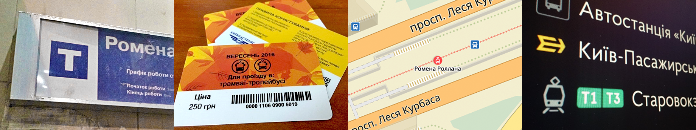
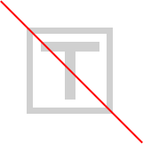
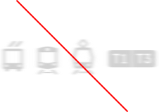
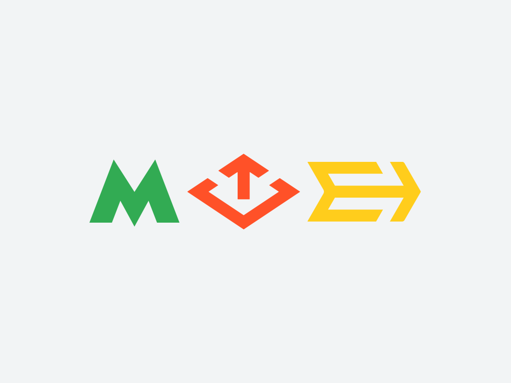
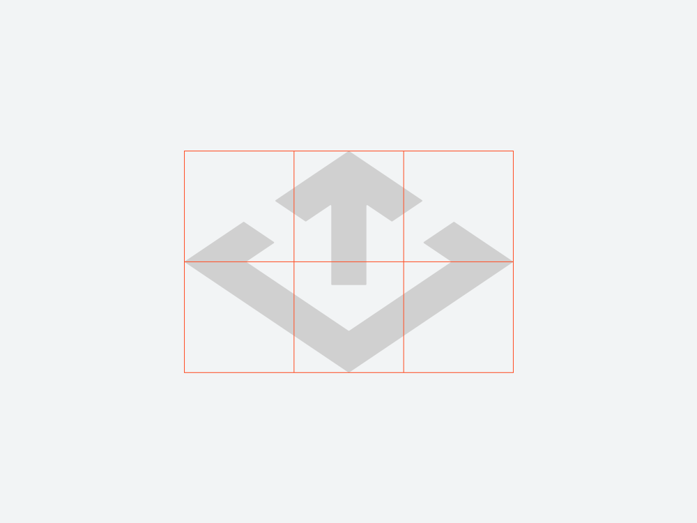
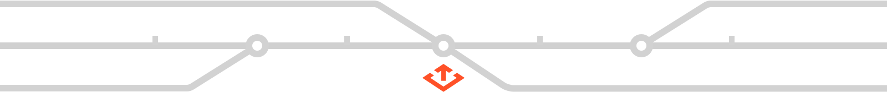

Дизайн комунікації
Знак швидкісного трамвая
Завдання: запропонувати позначення легкорейкової позавуличної транспортної системи м. Києва.

Від моменту відкриття у 1978 році київський швидкісний трамвай не має власного знаку у міському просторі й навігації зокрема

Старий варіант випадковий і невиразний

Однотипні піктограми важко розрізняти
Рішення
Новий знак — простий та впізнаваний символ сучасного громадського транспорту.

У знаку — буква «Т», стрілка, рух і ромб-струмоприймач.
Підходить для іноземців: «t» — tram

Форма добре поєднується із чинними позначеннями метро та міської електрички.

Співвідношення сторін близьке «золотого перетину» виглядає чисто й гармонійно.

Лінії та проміжки залишаються чіткими навіть у дрібному розмірі на схемах і вказівниках
Подяка
- Миколі Коваленко
- Олександру Колодько
- Владиславу Кулику
- Олені Мишанській
- Антону Шнайдеру
А також всім порадникам за допомогу в роботі над проєктом.
© 2017